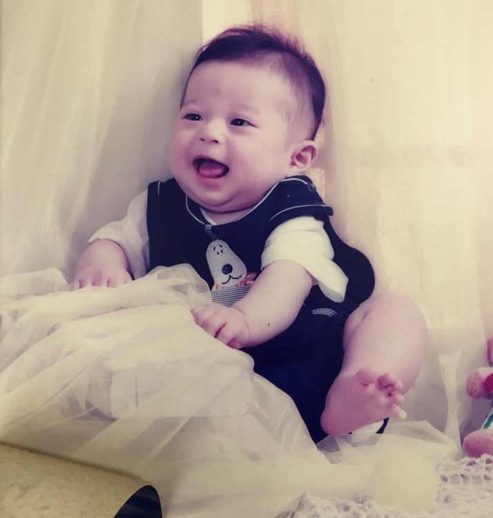
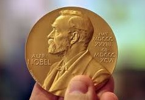

너무 어렸을 때는 기억나지 않는다. 나의 가장 큰 업적을 꼽으라면 3개가 있다. 첫번째로 이 세상의 빛을 본 것이다.
예의를 가장 중요시 여기는 부모님 밑에서 가르쳐 주신대로 올곧게 살아왔고, 앞으로도 그렇게 살아 갈 것이다. 두번째로는 홍익대학교 게임학부 게임소프트웨어전공에 입학하여 서범주교수님을 만난것이다.
나는 20년 30년이 지나도 가끔 이런말을 꼭 할 것만 같다. "내 인생은 서범주 교수님을 만나기 전화 후로 나뉘어 진다". 장난으로 하는 말이 진짜 아니다. 세번째로 게임프로그래머를 전문적으로 육성하는 학교를 만든것 이다.
숫자가 많이 적은 게임학부이기 때문에 이 길은 걷고자 하는 학생들에게 좋은 뒷받침이 되어 주고 싶다.
나는 노벨상을 받았다. 그것도 노벨 평화 상을 받았다. 김대중 전 대통령 이후로 우리나라 2번째 노벨
평화상 수상자 이다. 게임으로 노벨 평화상을 수상 하여 전세계 모든 언론사과 60억 인구가 나를 주목 했다.
상처를 치료해줄 사람 가만히 놔두다간 끊임 없이 덧나 사랑도 사람도 너무나도 겁나 혼자 있기
무서워 나 잊혀질까 두려워. 두배로 뛰뛰뛰어 때론 한번 거거 걸어 이 바닥에 천재가 되기 위해 했던 나의 피나
노노 노력 이 가사에 업적을 남겨 마이크를 들고 장전 사격 벝 못표는 아직더 머머 멀어 쉴틈 없이 계속
턴업 텁업 랩하며 댑하며 가사를 뱉어 들어간다 박자 아 윌 쇼 더 배럴 쓸내용이없습니다.

평화상 수상자 이다. 게임으로 노벨 평화상을 수상 하여 전세계 모든 언론사과 60억 인구가 나를 주목 했다.
상처를 치료해줄 사람 가만히 놔두다간 끊임 없이 덧나 사랑도 사람도 너무나도 겁나 혼자 있기
무서워 나 잊혀질까 두려워. 두배로 뛰뛰뛰어 때론 한번 거거 걸어 이 바닥에 천재가 되기 위해 했던 나의 피나
노노 노력 이 가사에 업적을 남겨 마이크를 들고 장전 사격 벝 못표는 아직더 머머 멀어 쉴틈 없이 계속
턴업 텁업 랩하며 댑하며 가사를 뱉어 들어간다 박자 아 윌 쇼 더 배럴 쓸내용이없습니다.